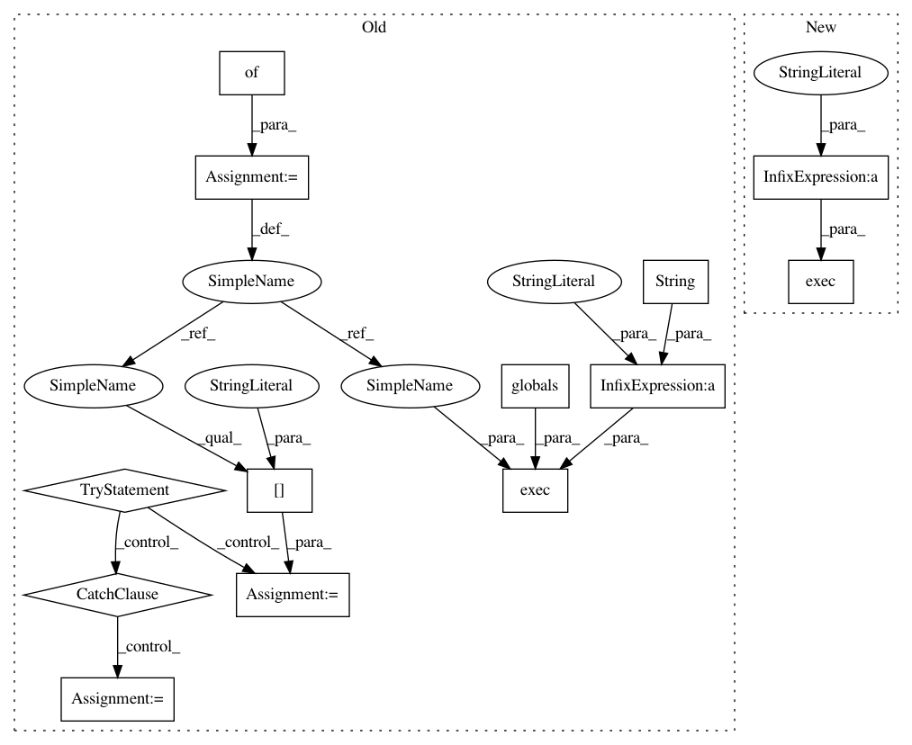

0c7f52ec5283148dda8ee74c056d42b38e188f94,TCP/Software/ingest_tools/feature_extraction_interface.py,Internal_Feature_Extractors,__init__,#Internal_Feature_Extractors#,350
Before Change
// Get doc strings (KLUDGY! but works.):
for (feat_name,feat_dict) in self.features_tup_list:
d = {}
exec("sys.path.append(os.path.abspath(os.environ.get("TCP_DIR") + "Software/feature_extract")); import Code; from Code import * ; from Code.extractors import * ; x = Code.extractors.%s.__doc__" % str(feat_name), globals(), d)
//print x
try:
x = d["x"]
except KeyError:
x = None
if x == None:
x = ""
feat_dict["doc"] = x
exec("sys.path.append(os.path.abspath(os.environ.get("TCP_DIR") + "Software/feature_extract")); import Code; from Code import * ; from Code.extractors import * ; import inspect; x = inspect.getmembers(Code.extractors.%s)" % (feat_name), globals(), d)
try:
x = d["x"]
except KeyError:
x = None
feat_dict["internal"] = "false"
for member_name, member_val in x:
if member_name == "internal_use_only":
if member_val == True:
After Change
// Get doc strings (KLUDGY! but works.):
for (feat_name,feat_dict) in self.features_tup_list:
exec("sys.path.append(os.path.abspath(os.environ.get("TCP_DIR") + "Software/feature_extract")); import Code; from Code import * ; from Code.extractors import * ; x = Code.extractors.%s.__doc__" % (feat_name))
//print x
if x == None:
x = ""
feat_dict["doc"] = x
In pattern: SUPERPATTERN
Frequency: 3
Non-data size: 13
Instances
Project Name: cesium-ml/cesium
Commit Name: 0c7f52ec5283148dda8ee74c056d42b38e188f94
Time: 2015-01-12
Author: a.crellinquick@gmail.com
File Name: TCP/Software/ingest_tools/feature_extraction_interface.py
Class Name: Internal_Feature_Extractors
Method Name: __init__
Project Name: cesium-ml/cesium
Commit Name: 0c7f52ec5283148dda8ee74c056d42b38e188f94
Time: 2015-01-12
Author: a.crellinquick@gmail.com
File Name: TCP/Software/ingest_tools/feature_extraction_interface.py
Class Name: Internal_Feature_Extractors
Method Name: __init__
Project Name: cesium-ml/cesium
Commit Name: afb3c7ec1591e4a72da2f8dec10f3596eee0ad53
Time: 2015-01-05
Author: a.crellinquick@gmail.com
File Name: TCP/Software/ingest_tools/feature_extraction_interface.py
Class Name: Internal_Feature_Extractors
Method Name: __init__
Project Name: cesium-ml/cesium
Commit Name: afb3c7ec1591e4a72da2f8dec10f3596eee0ad53
Time: 2015-01-05
Author: a.crellinquick@gmail.com
File Name: TCP/Software/feature_extract/Code/feature_interfaces.py
Class Name:
Method Name: initialize